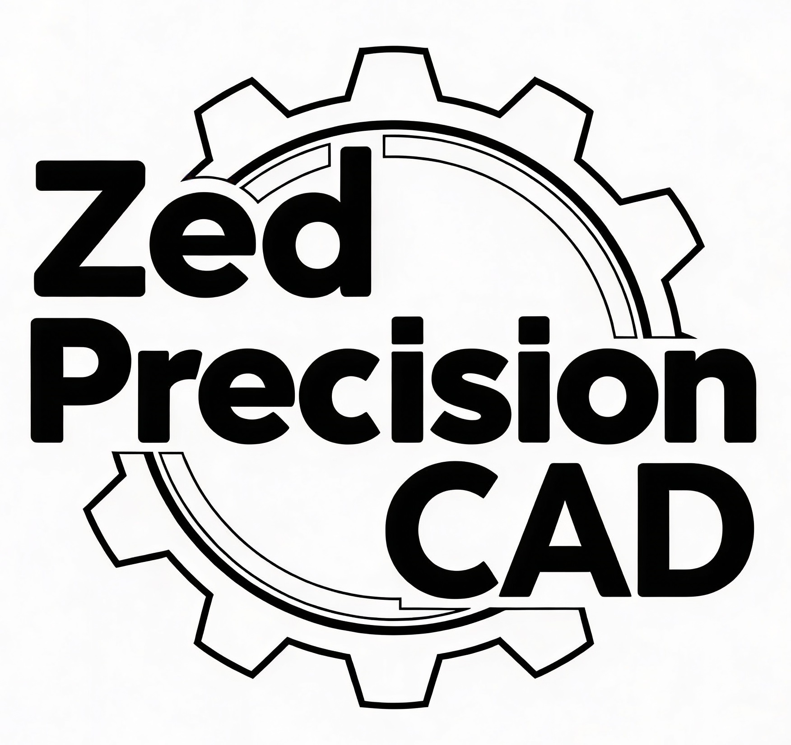
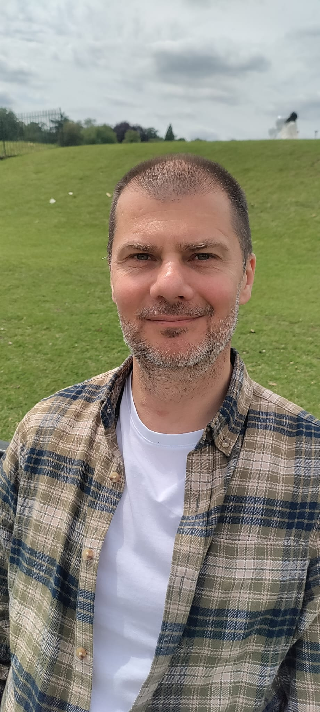

Professional 3D models, technical drawings and design support for mechanical engineering and manufacturing.
Request a quoteI specialise in mechanical design, 3D modelling of parts and assemblies, and production-ready technical drawings.
Accurate models of parts and assemblies ready for manufacturing, including tooling components and fixtures.
Complete 2D documentation with dimensions, tolerances and surface finish symbols, aligned with industry standards.
Updating existing projects, optimising designs for production and adapting them to your manufacturing process.
I combine hands-on toolmaking experience with modern CAD skills to deliver solutions that really work on the shop floor.
I understand the needs of production, CNC and maintenance, so every design is considered for machining, assembly and service.
Every project is treated as part of a real production process – from the first idea to start-up on the machine, with focus on simple, robust and repeatable solutions.
I am a CAD technician with tooling and CNC background, combining shop-floor practice with modern 3D design.

I spent several years working as a toolmaker and CNC operator, so I understand production requirements, machine limits and maintenance reality.
Now I focus on advanced 3D CAD, preparing models and drawings that are easy to manufacture and clear for machinists and fitters.
I enjoy projects where precision, simple solutions and good communication between design office and production are important.
Here are some typical projects where I can support your design team or maintenance department.
Concept, 3D model and full set of drawings for manufacturing and adjustment of the fixture.
Reworked model for a new production batch with updated dimensions and tolerances.
Small steel structures, guards, brackets and plates adapted to current safety requirements.
Share a few details about your project and I will come back with a proposal and rough quote.
Based in Purfleet-on-Thames, UK (remote work possible).
Email: contact@zedprecisioncad.co.uk
Phone (UK): 07401 099 997
I usually reply within 24 hours on business days.